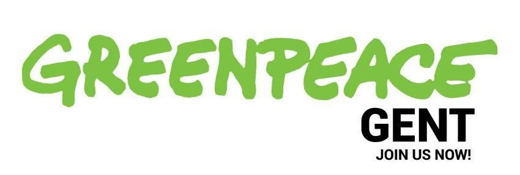

Stuur een mail naar Sammy Mahdi!
Stap 1: copy-paste email-adres:
info.mahdi@mahdi.fed.be
Stap 2: copy-paste tekst en maak eventueel aanpassingen:
Geachte Sammy Mahdi, Ik ben een gebruiker van De Lijn en merk regelmatig dat er nog verbetering mogelijk is. Vaak moet ik bijvoorbeeld nog een eind wandelen van of naar de bushalte, of moet ik lang wachten op een overstap. Ik hoor dat Vlaanderen meer mensen op het openbaar vervoer wil krijgen, maar moet constateren dat ik de laatste jaren meer verslechteringen heb gezien dan verbeteringen. Blijkbaar zijn de werkingsmiddelen niet omhoog gegaan? Ik was blij te lezen in De Tijd van 8 januari dat u meer middelen wil voorzien voor De Lijn indien dit nodig blijkt. Ik ben er van overtuigd dat dit heel erg nodig is. Nu de regeringsonderhandelingen bezig zijn, wil ik u vragen dit standpunt zeker mee te nemen naar de formatiegesprekken zodat het openbaar vervoer in Vlaanderen er echt op vooruit kan gaan. Hoogachtend,
Stap 3: Vergeet je naam niet toe te voegen!
Stap 4: Verstuur!
